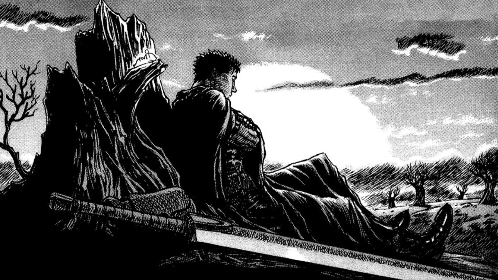
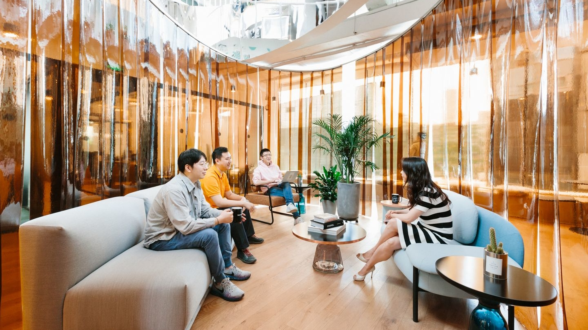
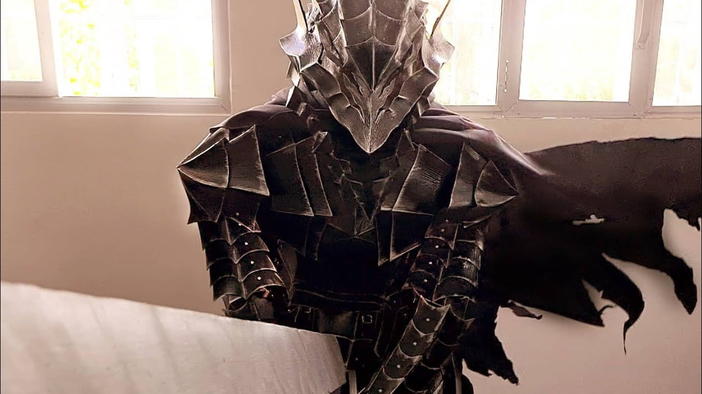

Berserk: La Comunitat de Fans i el seu Impacte
La Comunitat de Fans
Des de la seva creació el 1989, Berserk ha cultivat una comunitat de fans apassionada i devota a tot el món. Aquests fans han estat fonamentals per mantenir l'esperit de la sèrie viu, especialment a través de períodes d'inactivitat i la tragèdia de la mort de Kentaro Miura el 2021. La comunitat de Berserk no només celebra l'obra, sinó que també contribueix activament a la seva expansió i interpretació.
Clubs i Reunions de Fans
Arreu del món, existeixen diversos clubs de fans dedicats a Berserk. Aquests clubs organitzen reunions, discussions en línia i esdeveniments temàtics. En aquests espais, els fans poden compartir teories, analitzar capítols i discutir els temes profunds que la sèrie aborda. A més, els esdeveniments presencials sovint inclouen activitats com cosplay, projeccions d'adaptacions animades i tallers d'art.
Cosplay i Art de Fans
El cosplay és una part integral de la comunitat de Berserk. Molts fans es dediquen a crear vestits detallats dels seus personatges preferits, com Guts, Griffith i Casca. Aquestes creacions es mostren en convencions d'anime i manga, on els fans poden veure i apreciar l'esforç i la dedicació que hi ha darrere d'aquestes representacions.
A més del cosplay, els fans també contribueixen amb art original inspirat en Berserk. Des d'il·lustracions digitals fins a escultures, l'art de fans ajuda a mantenir viva la visió de Miura. Aquestes obres es comparteixen àmpliament en plataformes com DeviantArt, Pixiv i xarxes socials com Twitter i Instagram.
Fòrums i Xarxes Socials
La discussió en línia sobre Berserk és vibrant i constant. Fòrums com Reddit, especialment el subreddit r/Berserk, són centres d'activitat on els fans poden compartir notícies, teories, memes i molt més. Les xarxes socials també juguen un paper crucial en la disseminació d'informació i la connexió entre fans. Grups de Facebook, comptes de Twitter i hashtags dedicats permeten als seguidors estar al dia de les últimes novetats i connectar amb altres persones amb els mateixos interessos.